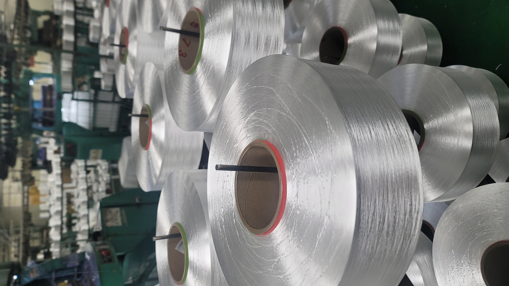

Production & Supply
We knit fabrics ourselves,
preparing for the production you need.
We review your fabric requirements
where the fabric is made.
Hwoasung Textile is a factory that sources yarn and knits in-house, reviewing yarn and fabric construction throughout production.
Based on your fabric or sample, we review the requirements, available greige and finished fabrics or the possibility of new knitting.



OUR PRODUCTION BASE
Preparing for
ongoing supply
From yarn sourcing and in-house knitting to greige and finished fabric,
we prepare the foundations for ongoing production.
Availability depends on the item and specifications. Fabric images are illustrative.
THE FIRST CONVERSATION
Start with what
you know.
A fabric name, sample or intended use
can be a starting point for a conversation.
FROM INQUIRY TO DELIVERY
From inquiry to delivery
We review and prepare the fabric to meet your requirements.
- Contact
- Consultation
- Sample review
- Greige check
- KnittingIf needed
- Colour lab dipIf a specific colour is needed
- Production
- Dispatch
If suitable greige fabric is unavailable, we review knitting feasibility, minimum order quantity and lead time.
A colour lab dip is needed for a specific colour even when greige fabric is available. Minimum processing quantities may apply.